Game Modes
Game modes provide the Terrarians with all sorts of uniqueness to their exploration process. From being
able to generate unlimited amount of items, down to elevating the challenge spike to an intense degree,
such modes will make sure that each player can have their own ways of making a more fun journey in their
playthrough. There are currently four gamemodes avaialable in Terraria, with some having to accessed via a
secret seed. One can select their preferred gamemode at the world creation menu
Once you have selected your gamemode, you cannot change it anymore, so make sure to choose wisely... Below
are the four general gamemodes of Terraria.
Journey Mode
"With great power comes great responsibility"
For those who have a habit of collecting stuffs, or have been a fan of Minecraft Creative Mode, this mode is just for you. On world creation, select
 and you'll be good to go.
and you'll be good to go.PS: Must require a journey mode character to access
Considered to be the "creative mode" of Terraria, players can experience the full content of the game without having to overcome challenges. Allowing the player a wide array of customization options during gameplay, including duplication of items, modification of time and weather, and difficulty sliders.
Control how the game flows for you... like a god of this world.
Classic Mode
"Your Journey Begins..."
The standard difficulty for all Terrarians old and new. Just click on the on world creation, and your first journey will soon begin.
A difficulty mode that is recommended for new players who wants to explore the game while facing challenges along the way...
Expert Mode
"Fortune & Glory, Kid."
Step up to the challenge and face Expert Mode in your journey. Just select
 on world creation and prepare for what is to come in your way
on world creation and prepare for what is to come in your way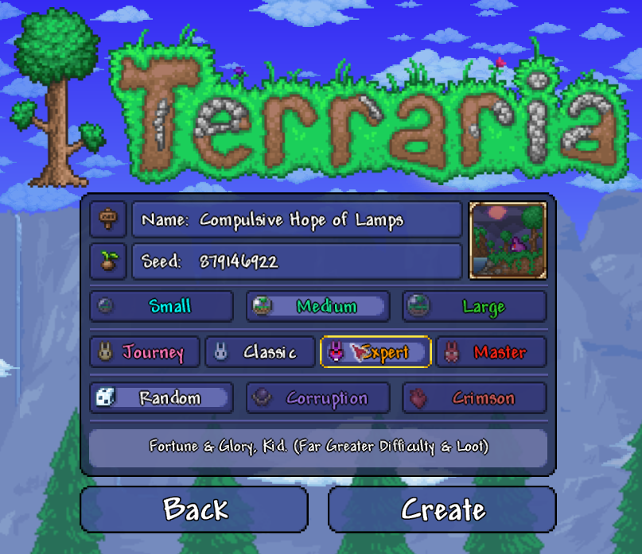
Introducing new boss patterns, deadlier enemenis; this will make you step up your gameplay even more, while at the same time, rewarding you with great rewards to collect.
 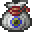
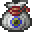

 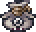
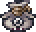

 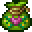
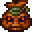
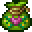
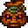


So... are you up to to the challenge?
Master Mode
"Game over man, game over!"
Expert mode still not enough for you? Then let us introduce Master Mode for you. Just click on
 and prepare for the worst...
and prepare for the worst...MORE HP, MORE DAMAGE, MORE BRUTALITY THAN EVER!!
Conquer and earn majestic trophies of fallen foes!!

 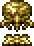
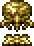


 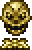
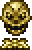